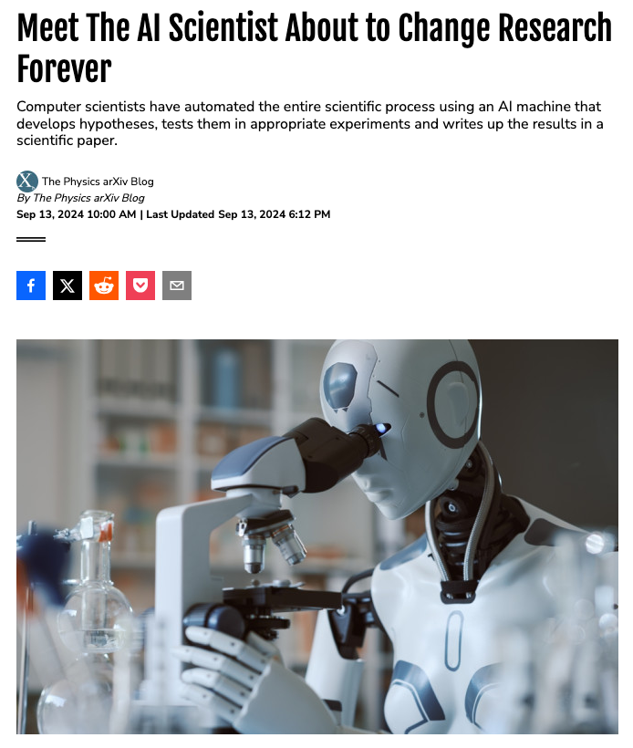
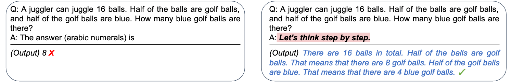

Introduction to LLMs & Important Ethical Aspects for Everyday Use in Research
Mastering AI Chatbots: Optimizing Research through Effective Use
Mag. Dr. Hannah Metzler & Konstantin Hebenstreit, MSc.
Complexity Science Hub & Medical University of Vienna
Slides: https://hannahmetzler.eu/ai_skills
AI: Super intelligence or stupid after all?
 Source: Discover Magazine
How do Large Language Models (LLM) work?
What is an LLM, actually?
- Large Language Models (LLMs): Deep learning neural networks built to understand and generate text
- Trained on vast amounts of text from diverse sources (Internet, Wikipedia, social media, books, podcasts, etc.)
- Convert text data into statistical patterns to predict words and sentences
It’s all in the name: GPT
Generative Pre-trained Transformer:
- Generative: Can generate text
- Pre-trained: Learned patterns from a lot of text found online
- Autoregressive: Predicts the next word from previous ones
- Learned from raw text, no human labels needed
- Autoregressive: Predicts the next word from previous ones
- Transformer: Efficient model architecture for sequential data
Next word prediction

Question for you:
- What does this mean, when the model writes citations and references?
How does the model represent text?
Words
Even though the sound of it is
something quite atrocious, if you
say it loud enough, you’ll always
sound precocious,
Supercalifragilisticexpialidocious!
Marry Poppins
→
Tokens = “Subwords”
Steps for training frontier LLMs
- Pre-train on most of the available data from the internet via next-word prediction.
- Fine-tune model to the chat setting.
- Refine with human feedback, e.g. via reinforcement learning.
Refining with human feedback
RLHF: Reinforcement learning from human feedback

Human preference data is used for creating a reward model, which is then used to train the LLM via reinforcement learning.
Source: AWS Blog
Which models for what?
Current top models
- Gemini 2.5 Pro (Google)
- ChatGPT-4o, GPT-4.5 and o3 (OpenAI)
- Grok-3 (xAI)
- Claude 3.7 Sonnet (Anthropic)
Best non-proprietary:
- DeepSeek-V3 (DeepSeek)
Source: Chatbot Arena
Types of models
- General or efficient: default, fast, everyday tasks
- Reasoning: Strong logical capabilities, detailed accuracy.
- Deep Research: Reasoning model + web search agent
What’s what on each platform?
| Provider | General | Reasoning | Efficient | Deep Research |
|---|---|---|---|---|
| OpenAI/ GPT | GPT-4o | o3, o4-mini-high | o4-mini | Deep R. mode (any) |
| Google/ Gemini | 2.0 Flash | 2.5 Pro, 2.5 Flash | 2.0 Flash | Deep R. (2.5 Pro) |
Anthropic: ClaudeSonnet 3.7: balanced, capable of reasoning & coding
Features of the models
All models (ChatGPT, Gemini, Claude)
- Long inputs and interactions possible (context window)
- Extended reasoning
- File & Image Uploads
- Connection to Google Drive
- Canvas mode (show formatted document)
Features of the models
| Capability | ChatGPT | Claude | Gemini |
|---|---|---|---|
| Web Browsing | ✅ | ~ | ✅ |
| Deep Research | ✅ | ❌ | ✅ |
| Image Generation | ✅ | ❌ | ✅ |
| Execute Code | ✅ | ~ | ✅ |
| Data analysis | ✅ | ❌ | ✅ |
| Voice input | ✅ | ~ | ✅ |
| Voice conversation | ✅ | ❌ | ❌ |
| Projects | ✅ | ✅ | ❌ |
This changes constantly!
Strengths of different models & interfaces
- ChatGPT (Open AI): most features, best interface, live mode video and voice
- Claude (Anthropic): writing style, interactive artifacts for simple figures or websites
- Gemini (Google): currently best model, integration with Google services (Youtube, google maps, flights, hotels, workspace, calendar, tasks etc)
Extended reasoning
“Automated” Chain-of-thought prompting
- Produces longer & better answers, better reasoning.
- Improve performance through more output tokens.
- Reasoning happens while model predicts each word.
Important: This is already included as a general capability of models.
Kojima et al. 2023
Automated extended reasoning
- No need for explicit chain-of-thought prompting
- Models trained to use “scratch pads” in background
- Hidden (e.g. GPT 4.x) or partially visible (e.g. o3)
Test different models
Simple math example:
9.11 or 9.9, which is bigger?
Compare different models. E.g. Gemini Flash 2.0 versus 2.5
options: - try adding “short answer” to provoke wrong output
- if the model gives wrong answer:
- ask it to explain it
- ask to check with code
Example output
Models learn by examples
Do you know this riddle?
A father and son are in a car crash, the father dies, and the son is rushed to the hospital. The surgeon says, ‘I can’t operate, that boy is my son,’ who is the surgeon?
Using a modified version to test the Chat-bots:
A young boy who has been in a car accident is rushed to the emergency room. Upon seeing him, the surgeon says, “I can operate on this boy!” How is this possible?
Example output
Models over rely on known patterns and make reasoning errors.
Models as Agents

Towards autonomous research

Source: Boiko et al. 2023
Overview
Source: Karpathy “How I use LLMs”
Overview (cont.)
Source: Karpathy “How I use LLMs”
Important ethical aspects
Two topics
1. Ethics in using AI for research
- What you can do to use LLM chatbots as ethically as possible.
- Broad societal implications of AI
- Biases, fairness, transparency, accountability, copyrights for training data…
- Super interesting, but not today
What happens with your input data?
- Model training: data can be used for future model training
- OpenAI: Opt out in Settings -> Data Controls:
- Turn off the option “Improve model for everyone”
- Gemini: Opt out only possible via deactivating saved conversations
- if activated: options to save activity for 3, 18 or 36 months
- Claude: does not train on your data by default
- Check for security violations of all chats. Human review.
General Data Protection Regulation
For all individuals within the EU
Avoid entering sensitive data that identifies individuals
Turning off model training on your inputs does not imply GDPR compliance.
Before processing personal data of subjects (especially patients) consult experts (e.g. data protection officers) at your university.
- Options with local models or servers in EU
Example: Academic AI
- ChatGPT is hosted on a Microsoft Azure server in EU
- Data stays within “Azure secure landing zone”
- Available at 23 universities (e.g. Uni Wien)

Copyright
- Passive right that applies to all persons.
- AI cannot be holder of copyright, as it is not a person
Example of a copyright violation:
Getty images sued midjourney (AI image creation) for training on their data.
AI in Journal Policies
- Policies are evolving rapidly in response to AI developments.
- Always review journal guidelines before submitting your work.
Elsevier’s Policies for Journals: Summary
- For Authors:
- AI tools can only be used to improve language and readability.
- Must disclose AI use in manuscripts.
- AI cannot be listed as an author.
- Figures & Images:
- AI cannot alter or create images (except if part of research methods/design).
- AI use in research must be documented in methods.
Elsevier’s Policies for Journals (cont’)
- For Reviewers:
- Do not upload manuscripts to AI tools (confidentiality breach).
- AI should not assist in peer review.
- For Editors:
- AI tools must not be used to evaluate or make decisions on manuscripts.
- Maintain confidentiality in all communications.
Beyond Papers: General Research Policies?
- Universities need to develop (realistic & progressive) policies
- Example of a PhD thesis guideline at MedUni Vienna that discourages AI use
- EU guidelines factsheet and report
- Critical Thinking, Integrity, Responsibility, Human Oversight, Transparency, Privacy, Confidentiality, Fairness
- Fast innovation and unregulated space
- Act based on these broad ethical principles. Think yourself. You are accountable.
Citations, References & Plagiarism
- How to cite ChatGPT: APA instructions
- Describe how you used the model (e.g. in Methods)
- When prompted with “…” the ChatGPT-generated text indicated that … (OpenAI, 2023).
- Reference: OpenAI. (2023). ChatGPT (Mar 14 version) [Large language model]. https://chat.openai.com/chat
- Plagiarism: Although word-by-word repetition of text is very rare, use a plagiarism checker to be sure.
- Check for hallucinations (see session on prompting)